CODING AGENTS AS PIXEL WORLD MODELS
traex/DeepSeek-V4.1-Flash · 0053
点击播放 · 原生 RGB 像素
逐轮保存的候选
回放视频、检查图与代码变化。
每份候选均可单独播放。实际图片检查记录在下方工具轨迹中。
候选 01播放与检查图
点击播放 · 原生 RGB 像素
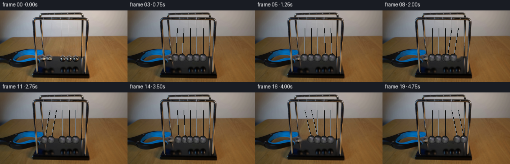
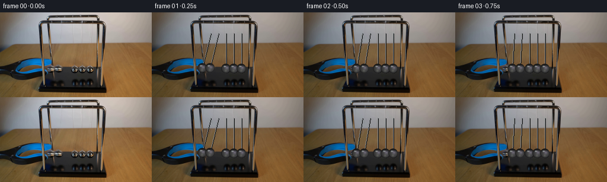
展开代码变化
--- 上一保存版本
+++ 本次保存版本
@@ -0,0 +1,182 @@
+"""Generate a five-second Newton's cradle demonstration.
+
+The photograph is the fixed camera plate. From frame 1 onward, the original
+five balls are removed and redrawn with analytic pendulum motion.
+"""
+
+from pathlib import Path
+
+import cv2
+import numpy as np
+from PIL import Image
+
+import artifact_io
+
+
+ROOT = Path(__file__).resolve().parent
+WIDTH, HEIGHT = 256, 144
+FRAME_COUNT, FPS = 20, 4
+
+REST_X = np.array([99.0, 112.0, 125.0, 138.0, 151.0])
+BALL_Y = 95.5
+PIVOT_Y = 35.0
+AMPLITUDE = np.deg2rad(13.0)
+
+
+def ease_cos(progress: float) -> float:
+ """Smooth quarter-swing profile."""
+ return 0.5 - 0.5 * np.cos(np.pi * np.clip(progress, 0.0, 1.0))
+
+
+def angles_at(frame_index: int) -> np.ndarray:
+ """Return the five pendulum angles for one 4 fps frame."""
+ theta = np.zeros(5, dtype=np.float64)
+ damping = [1.0, 1.0, 0.96, 0.91, 0.87]
+
+ # The grabber releases between frames 0 and 1. The first pair then makes a
+ # quarter swing into the three-ball group at frame 4.
+ if 1 <= frame_index < 4:
+ theta[:2] = -AMPLITUDE * (1.0 - ease_cos((frame_index - 1) / 3.0))
+
+ # Incoming pair stops; outgoing pair receives its momentum. Then reverse.
+ segments = [
+ (4, 7, 3, 4, +1),
+ (7, 10, 3, 4, -1),
+ (10, 13, 0, 1, -1),
+ (13, 16, 0, 1, +1),
+ (16, 19, 3, 4, +1),
+ ]
+ for start, end, first, last, direction in segments:
+ if start < frame_index <= end:
+ progress = (frame_index - start) / (end - start)
+ amount = direction * AMPLITUDE * damping[first]
+ if direction > 0:
+ value = amount * ease_cos(progress)
+ else:
+ value = amount * (1.0 - ease_cos(progress))
+ theta[first:last + 1] = value
+ return theta
+
+
+def ball_centres(frame_index: int) -> np.ndarray:
+ theta = angles_at(frame_index)
+ length = BALL_Y - PIVOT_Y
+ return np.column_stack(
+ (REST_X + length * np.sin(theta), PIVOT_Y + length * np.cos(theta))
+ )
+
+
+def make_clean_plate(source: np.ndarray) -> np.ndarray:
+ """Remove the photographed balls while retaining cradle and gripper."""
+ mask = np.zeros(source.shape[:2], np.uint8)
+ cv2.circle(mask, (85, 95), 8, 255, -1)
+ cv2.circle(mask, (99, 95), 8, 255, -1)
+ cv2.ellipse(mask, (92, 95), (14, 8), 0, 0, 360, 255, -1)
+ for x in (125, 138, 151):
+ cv2.circle(mask, (x, 96), 7, 255, -1)
+ # The gripper jaw crosses the left edge of the held pair.
+ jaw_keep = np.zeros_like(mask)
+ cv2.rectangle(jaw_keep, (72, 78), (87, 101), 255, -1)
+ mask[jaw_keep > 0] = 0
+ return cv2.inpaint(source, mask, 4, cv2.INPAINT_TELEA)
+
+
+def chrome_sprite(radius: int = 8, supersample: int = 4):
+ """Small chrome sphere with studio-like highlights and reflected bands."""
+ size = radius * 2 + 3
+ hi = size * supersample
+ yy, xx = np.mgrid[:hi, :hi]
+ cx = (size - 1) * supersample / 2.0
+ x = (xx - cx) / (radius * supersample)
+ y = (yy - cx) / (radius * supersample)
+ rr = x * x + y * y
+ z = np.sqrt(np.clip(1.0 - rr, 0.0, 1.0))
+
+ key = np.exp(-((x + 0.30) ** 2 + (y + 0.43) ** 2) / 0.020)
+ glint = np.exp(-((x + 0.04) ** 2 + (y + 0.44) ** 2) / 0.005)
+ blue = np.exp(-((x - 0.20) ** 2 + (y + 0.20) ** 2) / 0.12)
+ warm = np.exp(-((x + 0.05) ** 2 + (y - 0.50) ** 2) / 0.055)
+ rim = np.clip((x * 0.72 + y * 0.45 + 0.36) * 0.40, 0.0, 0.42)
+ base = 18.0 + 50.0 * z
+
+ rgb = np.empty((hi, hi, 3), np.float32)
+ rgb[..., 0] = base + 150 * key + 205 * glint + 40 * blue + 23 * warm + 28 * rim
+ rgb[..., 1] = base + 158 * key + 210 * glint + 35 * blue + 24 * warm + 28 * rim
+ rgb[..., 2] = base + 160 * key + 214 * glint + 48 * blue + 18 * warm + 31 * rim
+ lower = np.clip((-y - 0.25) * 1.8, 0.0, 1.0)
+ rgb *= (1.0 - 0.48 * lower[..., None])
+ edge = np.clip((rr - 0.70) / 0.30, 0.0, 1.0)
+ rgb *= (1.0 - 0.23 * edge[..., None])
+ rgb = np.clip(rgb, 0, 255)
+
+ alpha = np.clip((1.0 - rr) * radius * supersample / 1.7, 0.0, 1.0)
+ rgb = cv2.resize(rgb, (size, size), interpolation=cv2.INTER_AREA)
+ alpha = cv2.resize(alpha, (size, size), interpolation=cv2.INTER_AREA)
+ return rgb, alpha
+
+
+def alpha_blit(dst: np.ndarray, rgb: np.ndarray, alpha: np.ndarray, x: float, y: float):
+ h, w = alpha.shape
+ left = int(round(x - (w - 1) / 2))
+ top = int(round(y - (h - 1) / 2))
+ x0, y0 = max(left, 0), max(top, 0)
+ x1, y1 = min(left + w, dst.shape[1]), min(top + h, dst.shape[0])
+ if x0 >= x1 or y0 >= y1:
+ return
+ sx0, sy0 = x0 - left, y0 - top
+ sx1, sy1 = sx0 + x1 - x0, sy0 + y1 - y0
+ a = alpha[sy0:sy1, sx0:sx1, None]
+ patch = rgb[sy0:sy1, sx0:sx1]
+ dst[y0:y1, x0:x1] = (
+ dst[y0:y1, x0:x1].astype(np.float32) * (1.0 - a) + patch * a
+ ).astype(np.uint8)
+
+
+def draw_threads(image: np.ndarray, centres: np.ndarray):
+ overlay = image.astype(np.float32)
+ for index, (x, y) in enumerate(centres):
+ p0 = (int(REST_X[index]), int(PIVOT_Y))
+ p1 = (int(round(x)), int(round(y)))
+ cv2.line(overlay, (p0[0] + 1, p0[1] + 1), (p1[0] + 1, p1[1]),
+ (17, 18, 18), 1, cv2.LINE_AA)
+ cv2.line(overlay, p0, p1, (150, 154, 158), 1, cv2.LINE_AA)
+ image[:] = np.clip(overlay, 0, 255).astype(np.uint8)
+
+
+def draw_soft_shadow(image: np.ndarray, centres: np.ndarray):
+ shadow = np.zeros_like(image, dtype=np.float32)
+ for x, y in centres:
+ cv2.ellipse(shadow, (int(round(x)), int(round(y + 6))), (6, 2),
+ 0, 0, 360, (10, 10, 10), -1, cv2.LINE_AA)
+ image[:] = np.clip(
+ image.astype(np.float32) * 0.84 + shadow * 0.16, 0, 255
+ ).astype(np.uint8)
+
+
+def render_frame(plate: np.ndarray, sprite, index: int) -> np.ndarray:
+ image = plate.copy()
+ centres = ball_centres(index)
+ draw_threads(image, centres)
+ draw_soft_shadow(image, centres)
+ for x, y in centres:
+ alpha_blit(image, *sprite, x, y)
+ return image
+
+
+def main():
+ source = np.asarray(Image.open(ROOT / "first_frame.png").convert("RGB")).copy()
+ assert source.shape == (HEIGHT, WIDTH, 3)
+ plate_bgr = make_clean_plate(cv2.cvtColor(source, cv2.COLOR_RGB2BGR))
+ plate = cv2.cvtColor(plate_bgr, cv2.COLOR_BGR2RGB)
+ sprite = chrome_sprite()
+
+ frames = np.empty((FRAME_COUNT, HEIGHT, WIDTH, 3), np.uint8)
+ frames[0] = source
+ for index in range(1, FRAME_COUNT):
+ frames[index] = render_frame(plate, sprite, index)
+
+ artifact_io.save(frames, ROOT)
+
+
+if __name__ == "__main__":
+ main()
候选 02播放与检查图
点击播放 · 原生 RGB 像素

展开代码变化
--- 上一保存版本
+++ 本次保存版本
@@ -69,49 +69,28 @@
def make_clean_plate(source: np.ndarray) -> np.ndarray:
"""Remove the photographed balls while retaining cradle and gripper."""
mask = np.zeros(source.shape[:2], np.uint8)
- cv2.circle(mask, (85, 95), 8, 255, -1)
- cv2.circle(mask, (99, 95), 8, 255, -1)
- cv2.ellipse(mask, (92, 95), (14, 8), 0, 0, 360, 255, -1)
+ cv2.circle(mask, (84, 95), 7, 255, -1)
+ cv2.circle(mask, (98, 95), 7, 255, -1)
for x in (125, 138, 151):
- cv2.circle(mask, (x, 96), 7, 255, -1)
+ cv2.circle(mask, (x, 96), 6, 255, -1)
# The gripper jaw crosses the left edge of the held pair.
jaw_keep = np.zeros_like(mask)
cv2.rectangle(jaw_keep, (72, 78), (87, 101), 255, -1)
mask[jaw_keep > 0] = 0
- return cv2.inpaint(source, mask, 4, cv2.INPAINT_TELEA)
+ return cv2.inpaint(source, mask, 2, cv2.INPAINT_TELEA)
-def chrome_sprite(radius: int = 8, supersample: int = 4):
- """Small chrome sphere with studio-like highlights and reflected bands."""
- size = radius * 2 + 3
- hi = size * supersample
- yy, xx = np.mgrid[:hi, :hi]
- cx = (size - 1) * supersample / 2.0
- x = (xx - cx) / (radius * supersample)
- y = (yy - cx) / (radius * supersample)
- rr = x * x + y * y
- z = np.sqrt(np.clip(1.0 - rr, 0.0, 1.0))
+def chrome_sprite(source: np.ndarray):
+ """Use one photographed sphere as a subpixel-aware chrome sprite."""
+ size = 15
+ centre = (138, 96)
+ left, top = centre[0] - size // 2, centre[1] - size // 2
+ rgb = source[top:top + size, left:left + size].astype(np.float32)
- key = np.exp(-((x + 0.30) ** 2 + (y + 0.43) ** 2) / 0.020)
- glint = np.exp(-((x + 0.04) ** 2 + (y + 0.44) ** 2) / 0.005)
- blue = np.exp(-((x - 0.20) ** 2 + (y + 0.20) ** 2) / 0.12)
- warm = np.exp(-((x + 0.05) ** 2 + (y - 0.50) ** 2) / 0.055)
- rim = np.clip((x * 0.72 + y * 0.45 + 0.36) * 0.40, 0.0, 0.42)
- base = 18.0 + 50.0 * z
-
- rgb = np.empty((hi, hi, 3), np.float32)
- rgb[..., 0] = base + 150 * key + 205 * glint + 40 * blue + 23 * warm + 28 * rim
- rgb[..., 1] = base + 158 * key + 210 * glint + 35 * blue + 24 * warm + 28 * rim
- rgb[..., 2] = base + 160 * key + 214 * glint + 48 * blue + 18 * warm + 31 * rim
- lower = np.clip((-y - 0.25) * 1.8, 0.0, 1.0)
- rgb *= (1.0 - 0.48 * lower[..., None])
- edge = np.clip((rr - 0.70) / 0.30, 0.0, 1.0)
- rgb *= (1.0 - 0.23 * edge[..., None])
- rgb = np.clip(rgb, 0, 255)
-
- alpha = np.clip((1.0 - rr) * radius * supersample / 1.7, 0.0, 1.0)
- rgb = cv2.resize(rgb, (size, size), interpolation=cv2.INTER_AREA)
- alpha = cv2.resize(alpha, (size, size), interpolation=cv2.INTER_AREA)
+ yy, xx = np.mgrid[:size, :size]
+ cx = cy = (size - 1) / 2.0
+ rr = (xx - cx) ** 2 + (yy - cy) ** 2
+ alpha = np.clip((5.25 - np.sqrt(rr)) / 0.80, 0.0, 1.0)
return rgb, alpha
@@ -139,7 +118,7 @@
p1 = (int(round(x)), int(round(y)))
cv2.line(overlay, (p0[0] + 1, p0[1] + 1), (p1[0] + 1, p1[1]),
(17, 18, 18), 1, cv2.LINE_AA)
- cv2.line(overlay, p0, p1, (150, 154, 158), 1, cv2.LINE_AA)
+ cv2.line(overlay, p0, p1, (92, 97, 102), 1, cv2.LINE_AA)
image[:] = np.clip(overlay, 0, 255).astype(np.uint8)
@@ -168,12 +147,14 @@
assert source.shape == (HEIGHT, WIDTH, 3)
plate_bgr = make_clean_plate(cv2.cvtColor(source, cv2.COLOR_RGB2BGR))
plate = cv2.cvtColor(plate_bgr, cv2.COLOR_BGR2RGB)
- sprite = chrome_sprite()
+ sprite = chrome_sprite(source)
frames = np.empty((FRAME_COUNT, HEIGHT, WIDTH, 3), np.uint8)
frames[0] = source
for index in range(1, FRAME_COUNT):
frames[index] = render_frame(plate, sprite, index)
+ # Restore the gripper jaw in front of the left ball.
+ frames[index, 78:103, 72:90] = source[78:103, 72:90]
artifact_io.save(frames, ROOT)
候选 03播放与检查图
点击播放 · 原生 RGB 像素

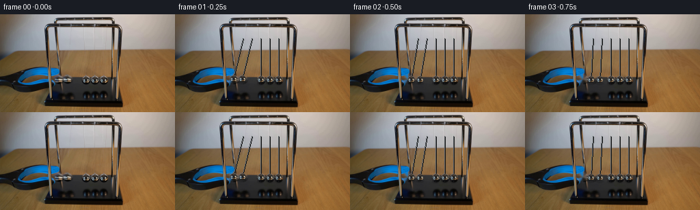
展开代码变化
--- 上一保存版本
+++ 本次保存版本
@@ -73,9 +73,10 @@
cv2.circle(mask, (98, 95), 7, 255, -1)
for x in (125, 138, 151):
cv2.circle(mask, (x, 96), 6, 255, -1)
- # The gripper jaw crosses the left edge of the held pair.
+ # Keep the stationary jaw; it is redrawn from the source after the balls
+ # are composited so its silhouette remains crisp.
jaw_keep = np.zeros_like(mask)
- cv2.rectangle(jaw_keep, (72, 78), (87, 101), 255, -1)
+ cv2.rectangle(jaw_keep, (70, 78), (77, 103), 255, -1)
mask[jaw_keep > 0] = 0
return cv2.inpaint(source, mask, 2, cv2.INPAINT_TELEA)
@@ -123,13 +124,13 @@
def draw_soft_shadow(image: np.ndarray, centres: np.ndarray):
- shadow = np.zeros_like(image, dtype=np.float32)
+ shadow = np.zeros(image.shape[:2], dtype=np.float32)
for x, y in centres:
cv2.ellipse(shadow, (int(round(x)), int(round(y + 6))), (6, 2),
- 0, 0, 360, (10, 10, 10), -1, cv2.LINE_AA)
- image[:] = np.clip(
- image.astype(np.float32) * 0.84 + shadow * 0.16, 0, 255
- ).astype(np.uint8)
+ 0, 0, 360, 1.0, -1, cv2.LINE_AA)
+ shadow = cv2.GaussianBlur(shadow, (0, 0), 1.0)
+ image[:] = np.clip(image.astype(np.float32) * (1.0 - 0.16 * shadow[..., None]),
+ 0, 255).astype(np.uint8)
def render_frame(plate: np.ndarray, sprite, index: int) -> np.ndarray:
@@ -154,7 +155,7 @@
for index in range(1, FRAME_COUNT):
frames[index] = render_frame(plate, sprite, index)
# Restore the gripper jaw in front of the left ball.
- frames[index, 78:103, 72:90] = source[78:103, 72:90]
+ frames[index, 78:104, 69:77] = source[78:104, 69:77]
artifact_io.save(frames, ROOT)
候选 04播放与检查图
点击播放 · 原生 RGB 像素

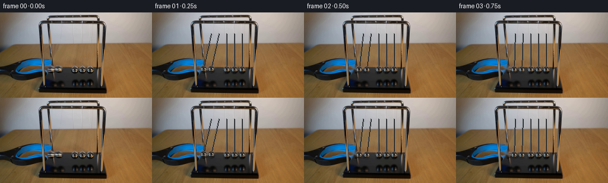
展开代码变化
--- 上一保存版本
+++ 本次保存版本
@@ -20,7 +20,7 @@
REST_X = np.array([99.0, 112.0, 125.0, 138.0, 151.0])
BALL_Y = 95.5
PIVOT_Y = 35.0
-AMPLITUDE = np.deg2rad(13.0)
+AMPLITUDE = np.deg2rad(14.0)
def ease_cos(progress: float) -> float:
@@ -29,32 +29,30 @@
def angles_at(frame_index: int) -> np.ndarray:
- """Return the five pendulum angles for one 4 fps frame."""
+ """Return angles using collision states and a damped pendulum swing."""
+ # (frame, left-pair angle, right-pair angle). Zero is a collision/rest.
+ keys = [
+ (0, -14.0, 0.0),
+ (4, 0.0, 0.0),
+ (7, 0.0, 12.7),
+ (10, 0.0, 0.0),
+ (13, -11.0, 0.0),
+ (16, 0.0, 0.0),
+ (19, 0.0, 9.3),
+ ]
+ start = max(k for k in keys if k[0] <= frame_index)
+ end = min((k for k in keys if k[0] >= frame_index), key=lambda k: k[0])
+ if start[0] == end[0]:
+ left, right = start[1], start[2]
+ else:
+ progress = (frame_index - start[0]) / (end[0] - start[0])
+ blend = ease_cos(progress)
+ left = start[1] + (end[1] - start[1]) * blend
+ right = start[2] + (end[2] - start[2]) * blend
+
theta = np.zeros(5, dtype=np.float64)
- damping = [1.0, 1.0, 0.96, 0.91, 0.87]
-
- # The grabber releases between frames 0 and 1. The first pair then makes a
- # quarter swing into the three-ball group at frame 4.
- if 1 <= frame_index < 4:
- theta[:2] = -AMPLITUDE * (1.0 - ease_cos((frame_index - 1) / 3.0))
-
- # Incoming pair stops; outgoing pair receives its momentum. Then reverse.
- segments = [
- (4, 7, 3, 4, +1),
- (7, 10, 3, 4, -1),
- (10, 13, 0, 1, -1),
- (13, 16, 0, 1, +1),
- (16, 19, 3, 4, +1),
- ]
- for start, end, first, last, direction in segments:
- if start < frame_index <= end:
- progress = (frame_index - start) / (end - start)
- amount = direction * AMPLITUDE * damping[first]
- if direction > 0:
- value = amount * ease_cos(progress)
- else:
- value = amount * (1.0 - ease_cos(progress))
- theta[first:last + 1] = value
+ theta[:2] = np.deg2rad(left)
+ theta[3:] = np.deg2rad(right)
return theta
可观测工具轨迹
实际执行的命令与返回图片。
命令 1exit 0
/bin/bash -c "pwd && rg --files -g '"'!*.git*'"' | sed -n '1,120p'"
命令 2exit 0
/bin/bash -c 'cat prompt.txt'
命令 3exit 0
/bin/bash -c 'cat GENERATION_RULES.md'
命令 4exit 0
/bin/bash -c 'file first_frame.png && identify first_frame.png 2>/dev/null || true && ls -lah'
命令 5exit 0
/bin/bash -c "sed -n '1,240p' artifact_io.py"
命令 6exit 0
/bin/bash -c "python - <<'PY'
from PIL import Image
im=Image.open('first_frame.png')
print(im.size, im.mode)
for box,name in [((0,30,190,140),'left'),((55,55,180,140),'cradle'),((90,75,175,140),'balls'),((0,55,100,135),'grabber')]:
im.crop(box).resize(((box[2]-box[0])*6,(box[3]-box[1])*6),Image.Resampling.NEAREST).save('.tmp/'+name+'.png')
PY"命令 7exit 0
/bin/bash -c "python - <<'PY'
try:
import cv2; print('cv2',cv2.__version__)
except Exception as e: print('no cv2',e)
try:
import scipy; print('scipy',scipy.__version__)
except Exception as e: print('no scipy',e)
PY"命令 8exit 0
/bin/bash -c "python - <<'PY'
from PIL import Image, ImageFilter
im=Image.open('first_frame.png')
im.crop((0,55,125,135)).resize((1000,640),Image.Resampling.LANCZOS).save('.tmp/grabber_big.png')
im.crop((70,65,165,125)).resize((950,600),Image.Resampling.LANCZOS).save('.tmp/balls_big.png')
PY"命令 9exit 0
/bin/bash -c "python - <<'PY'
from PIL import Image
import numpy as np
im=np.array(Image.open('first_frame.png'))
g=im.mean(2)
for y in [35,45,55,65,75,85,88]:
xs=np.where(g[y,70:165]>18)[0]+70
# runs
runs=[]
if len(xs):
s=p=xs[0]
for x in xs[1:]:
if x>p+1: runs.append((s,p)); s=x
p=x
runs.append((s,p))
print(y,runs)
print([(x,im[y,x].tolist()) for x in range(80,150) if g[y,x]>25][:30])
PY"命令 10exit 0
/bin/bash -c "python - <<'PY'
import cv2, numpy as np
im=cv2.imread('first_frame.png')
g=cv2.cvtColor(im,cv2.COLOR_BGR2GRAY)
c=cv2.HoughCircles(g,cv2.HOUGH_GRADIENT,dp=1,minDist=8,param1=80,param2=15,minRadius=4,maxRadius=11)
print(c)
# crop y80:115 x75:160 enlarge nearest with grid? print max brightness each x
for x in range(76,161):
print(x, round(float(g[82:115,x].max())), int(np.argmax(g[82:115,x])+82))
PY"命令 11exit 0
/bin/bash -c "python - <<'PY'
from PIL import Image
im=Image.open('first_frame.png')
im.crop((75,80,170,112)).resize((1140,384),Image.Resampling.NEAREST).save('.tmp/allballs_nearest.png')
PY"命令 12exit 0
/bin/bash -c "python - <<'PY'
import cv2, numpy as np
im=cv2.imread('first_frame.png')
for x,y in [(84,95),(94,95),(99,96),(125,96),(138,96),(141,96),(154,96),(73,23)]: print(x,y,im[y,x][::-1])
# manually save exact 80x20 crop with interpolation nearest and some labels not needed
PY"命令 13exit 0
/bin/bash -c "python - <<'PY'
from PIL import Image, ImageDraw, ImageFont
im=Image.open('first_frame.png').resize((1024,576),Image.Resampling.NEAREST)
d=ImageDraw.Draw(im)
for x in range(0,257,10):
X=x*4; d.line((X,0,X,576),fill=(255,0,0),width=1); d.text((X+2,2),str(x),fill=(255,0,0))
for y in range(0,145,10):
Y=y*4; d.line((0,Y,1024,Y),fill=(255,0,0),width=1); d.text((2,Y+2),str(y),fill=(255,0,0))
im.crop((240,240,700,500)).save('.tmp/gridballs.png')
PY"命令 14exit 0
/bin/bash -c "python - <<'PY'
from PIL import Image
im=Image.open('first_frame.png')
# crop exact balls area and upscale smooth with vertical/horiz grid overlay via cv2? easier create 8x with grid lines every 8 pix
scale=10
out=im.crop((76,80,162,112)).resize((86*scale,32*scale),Image.Resampling.NEAREST)
from PIL import ImageDraw
d=ImageDraw.Draw(out)
for x in range(76,163,2):
X=(x-76)*scale; d.line((X,0,X,320),fill=(255,0,0),width=1)
if x%10==0:d.text((X+1,0),str(x),fill=(255,0,0))
for y in range(80,113,2):
Y=(y-80)*scale; d.line((0,Y,860,Y),fill=(255,0,0),width=1)
if y%10==0:d.text((1,Y+1),str(y),fill=(255,0,0))
out.save('.tmp/gridballs10.png')
PY"命令 15exit 0
/bin/bash -c "python - <<'PY'
from PIL import Image
im=Image.open('first_frame.png')
im.crop((0,0,256,144)).resize((1024,576),Image.Resampling.LANCZOS).save('.tmp/full_big.png')
PY"命令 16exit 0
/bin/bash -c "python - <<'PY'
from PIL import Image, ImageDraw
im=Image.open('first_frame.png')
out=Image.new('RGB',(1024,576),(0,0,0)); out.paste(im.resize((1024,576),Image.Resampling.NEAREST),(0,0))
d=ImageDraw.Draw(out)
for x in range(0,257,8):
X=x*4; d.line((X,0,X,576),fill=(255,0,0),width=1); d.text((X+1,1),str(x),fill=(255,0,0))
for y in range(0,145,8):
Y=y*4; d.line((0,Y,1024,Y),fill=(255,0,0),width=1); d.text((1,Y+1),str(y),fill=(255,0,0))
out.save('.tmp/full_grid.png')
PY"命令 17exit 0
/bin/bash -c "python - <<'PY'
from PIL import Image
im=Image.open('first_frame.png')
for box,name in [((0,60,128,128),'handle'),((0,64,112,128),'jaw'),((64,76,112,116),'held'),((112,80,164,112),'rest')]:
im.crop(box).resize(((box[2]-box[0])*12,(box[3]-box[1])*12),Image.Resampling.NEAREST).save('.tmp/'+name+'12.png')
PY"命令 18exit 0
/bin/bash -c "python - <<'PY'
from PIL import Image,ImageDraw
im=Image.open('first_frame.png').crop((50,68,112,116)).resize((620,480),Image.Resampling.NEAREST)
d=ImageDraw.Draw(im)
for x in range(50,113,2):
X=(x-50)*10; d.line((X,0,X,480),fill=(255,0,0));
if x%10==0:d.text((X+1,1),str(x),fill=(255,0,0))
for y in range(68,117,2):
Y=(y-68)*10; d.line((0,Y,620,Y),fill=(255,0,0));
if y%10==0:d.text((1,Y+1),str(y),fill=(255,0,0))
im.save('.tmp/jaw_grid.png')
PY"命令 19exit 0
/bin/bash -c "python - <<'PY'
import cv2, numpy as np
im=cv2.imread('first_frame.png')
# print rgb values at likely ball centers
for y in range(80,112):
vals=[]
for x in range(64,112):
b,g,r=im[y,x]
# colorful metal saturation and bright
if int(r)+int(g)+int(b)>180 and max(r,g,b)-min(r,g,b)>12: vals.append((x,(int(r),int(g),int(b))))
if vals: print(y,vals)
PY"命令 20exit 0
/bin/bash -c "python - <<'PY'
from PIL import Image
import numpy as np
im=np.array(Image.open('first_frame.png'))
for y in range(70,120):
row=im[y,55:165]
bright=np.where(row.mean(1)>60)[0]+55
runs=[]
if len(bright):
s=p=bright[0]
for x in bright[1:]:
if x>p+1:runs.append((int(s),int(p)));s=x
p=x
runs.append((int(s),int(p)))
print(y,runs)
PY"命令 21exit 0
/bin/bash -c "python - <<'PY'
from PIL import Image
im=Image.open('first_frame.png')
im.crop((78,70,112,118)).resize((680,960),Image.Resampling.NEAREST).save('.tmp/jaws_detail.png')
PY"命令 22exit 0
/bin/bash -c "python - <<'PY'
import cv2,numpy as np
im=cv2.imread('first_frame.png')
g=cv2.cvtColor(im,cv2.COLOR_BGR2GRAY).astype(float)
# print strongest local vertical-line positions in x70:170 for each row band
for y in [40,50,60,70,80,84]:
# local diff from median 3 cols
vals=[]
for x in range(70,170):
d=g[y,x]-(g[y,x-3]+g[y,x+3])/2
if abs(d)>3: vals.append((x,round(d,1),int(g[y,x])))
print('y',y,vals)
# min row intensities to see strings
PY"命令 23exit 0
/bin/bash -c "python - <<'PY'
import cv2
im=cv2.imread('first_frame.png')
g=cv2.cvtColor(im,cv2.COLOR_BGR2GRAY)
for p2 in [12,10,8,6]:
c=cv2.HoughCircles(g,cv2.HOUGH_GRADIENT,dp=1,minDist=5,param1=50,param2=p2,minRadius=4,maxRadius=9)
print('p2',p2,c)
PY"命令 24exit 0
/bin/bash -c "python - <<'PY'
from PIL import Image
im=Image.open('first_frame.png')
im.crop((88,88,110,104)).resize((660,480),Image.Resampling.NEAREST).save('.tmp/ball2_exact.png')
im.crop((114,88,164,106)).resize((1000,360),Image.Resampling.NEAREST).save('.tmp/rest_exact.png')
PY"命令 25exit 0
/bin/bash -c "python - <<'PY'
import cv2, numpy as np
im=cv2.imread('first_frame.png')
# compare left ball center by center of highly bright area around x90,y96
for x in range(75,110):
p=im[88:105,x].mean(1)
print(x,round(float(p.max())),int(p.argmax()+88),round(float(p.mean())))
PY"命令 26exit 0
/bin/bash -c "python - <<'PY'
import numpy as np
from PIL import Image
im=np.array(Image.open('first_frame.png'))
# Print 2x2 neighborhood RGB for bright ball highlights
for y in [92,93,94,95,96,97,98,99,100]:
print('y',y)
for x in [84,86,88,89,90,91,92,93,94,95,96,97,98,99,100,101,102,103,104]:
r,g,b=im[y,x]
if max(r,g,b)>120: print(x,(r,g,b),end=' ')
print()
PY"命令 27exit 0
/bin/bash -c "python - <<'PY'
import cv2, numpy as np
im=cv2.imread('first_frame.png')
# grabber mask: pixels whose BGR has blue dominance or dark grey jaw edge etc, connected from left
b,g,r=cv2.split(im)
mask=((b.astype(int)-r.astype(int)>45)&(b>50)).astype(np.uint8)*255
n,lab,stats,cent=cv2.connectedComponentsWithStats(mask)
for i in range(1,n):
if stats[i,4]>10: print(i,stats[i],cent[i])
cv2.imwrite('.tmp/bluemask.png',mask)
PY"命令 28exit 0
/bin/bash -c "python - <<'PY'
from PIL import Image
im=Image.open('first_frame.png')
im.crop((60,72,120,116)).resize((960,704),Image.Resampling.LANCZOS).save('.tmp/held_lanczos.png')
PY"命令 29exit 0
/bin/bash -c "python - <<'PY'
import numpy as np
from PIL import Image
im=np.array(Image.open('first_frame.png'))
# bright ball region x86:104 y94:97, print grayscale ascii
chars=' .:-=+*#%@'
for y in range(88,104):
s=''
for x in range(76,112):
v=im[y,x].mean()
s+=chars[min(9,int(v/256*10))]
print(f'{y:3}',s)
PY"命令 30exit 0
/bin/bash -c "python - <<'PY'
import numpy as np
from PIL import Image
im=np.array(Image.open('first_frame.png'))
chars=' .:-=+*#%@'
for y in range(90,104):
s=''
for x in range(80,115):
v=im[y,x].mean()
s+=chars[min(9,int(v/256*10))]
print(f'{y:3}',s)
print(' '+''.join(str(x//10%10) for x in range(80,115)))
print(' '+''.join(str(x%10) for x in range(80,115)))
PY"命令 31exit 0
/bin/bash -c "python - <<'PY'
import numpy as np
from PIL import Image
im=np.array(Image.open('first_frame.png'))
chars=' .:-=+*#%@'
for y in range(90,102):
s=''
for x in range(104,164):
v=im[y,x].mean()
s+=chars[min(9,int(v/256*10))]
print(f'{y:3}',s)
print(' '+''.join(str(x//10%10) for x in range(104,164)))
print(' '+''.join(str(x%10) for x in range(104,164)))
PY"命令 32exit 0
/bin/bash -c "python - <<'PY'
from PIL import Image
im=Image.open('first_frame.png')
for box,name in [((108,82,168,108),'restballs'),((116,88,132,102),'r1'),((128,88,145,102),'r2'),((146,88,162,102),'r3')]:
im.crop(box).resize(((box[2]-box[0])*20,(box[3]-box[1])*20),Image.Resampling.NEAREST).save('.tmp/'+name+'20.png')
PY"命令 33exit 0
/bin/bash -c 'ls .tmp/*20.png'
命令 34exit 0
/bin/bash -c "python - <<'PY'
import numpy as np
from PIL import Image
im=np.array(Image.open('first_frame.png'))
chars=' .:-=+*#%@'
for y in range(86,108):
s=''
for x in range(108,168):
v=im[y,x].mean()
s+=chars[min(9,int(v/256*10))]
print(f'{y:3}',s)
print(' '+''.join(str(x//10%10) for x in range(108,168)))
print(' '+''.join(str(x%10) for x in range(108,168)))
PY"视觉工具实际返回图片 1

视觉工具实际返回图片 2
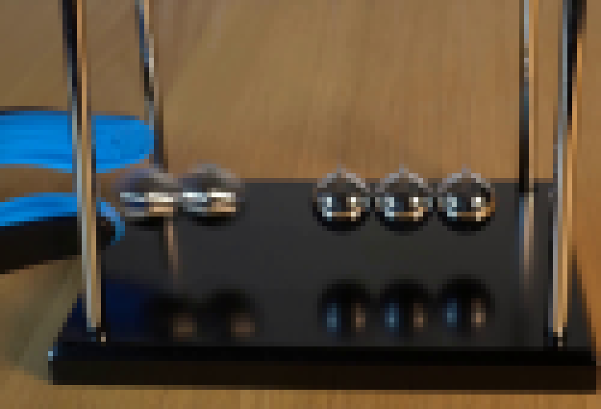
视觉工具实际返回图片 3
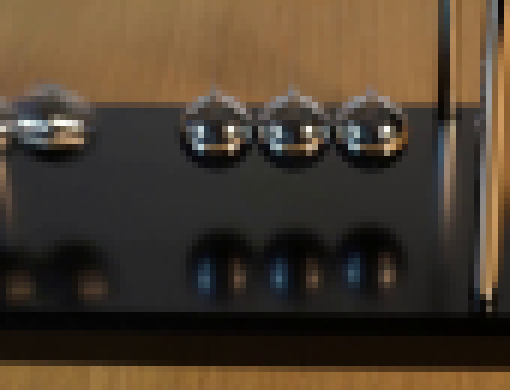
视觉工具实际返回图片 4
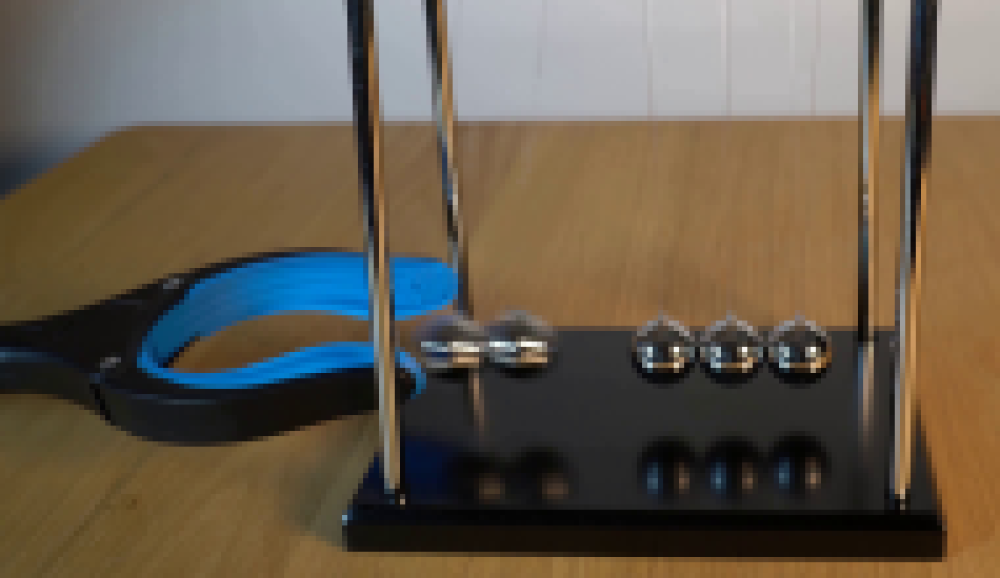
视觉工具实际返回图片 5
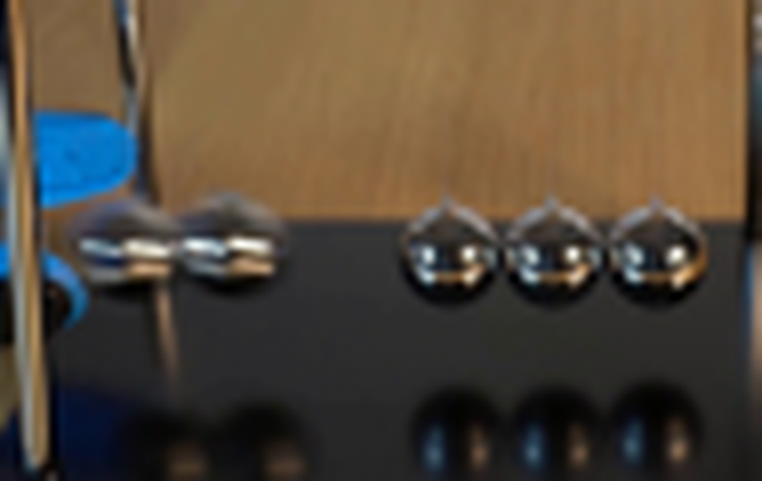
视觉工具实际返回图片 6
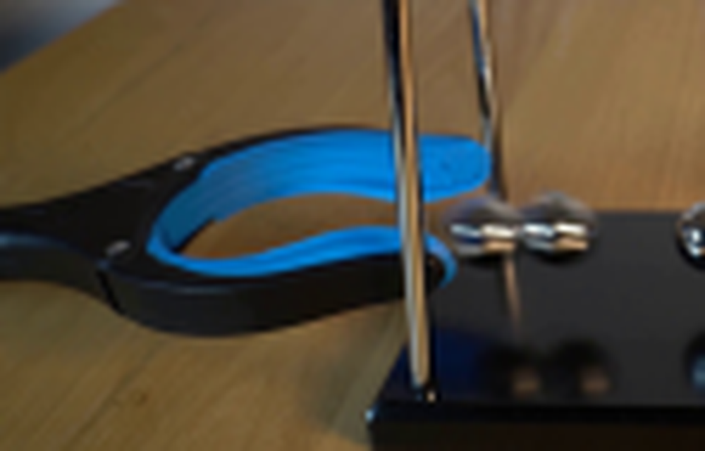
视觉工具实际返回图片 7
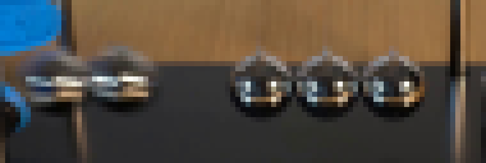
视觉工具实际返回图片 8
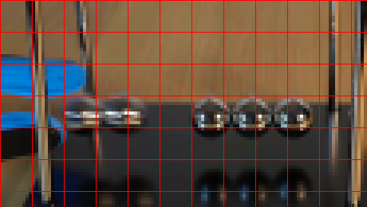
视觉工具实际返回图片 9
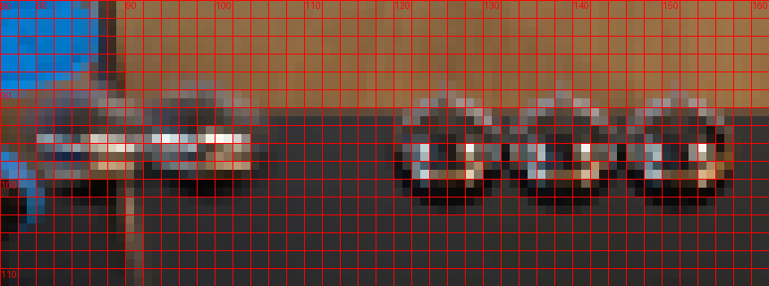
视觉工具实际返回图片 10
视觉工具实际返回图片 11
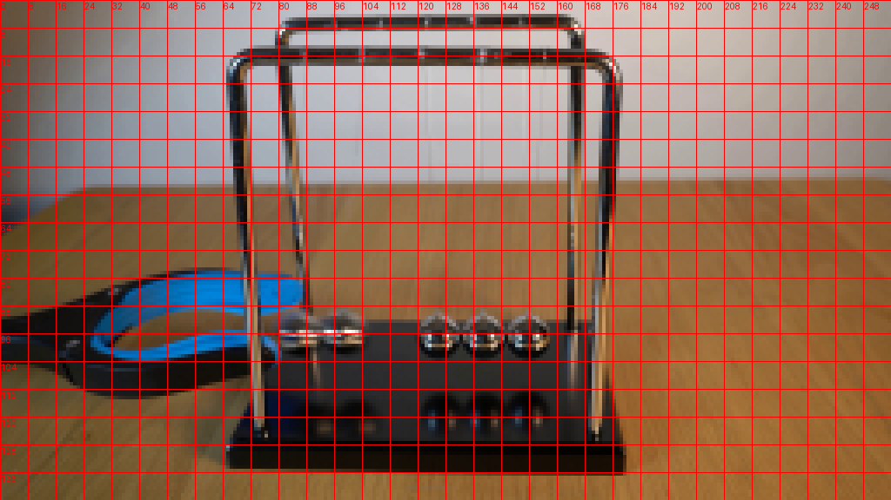
视觉工具实际返回图片 12
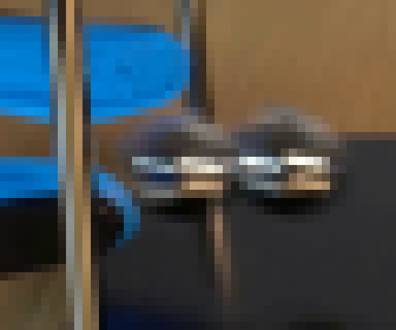
视觉工具实际返回图片 13
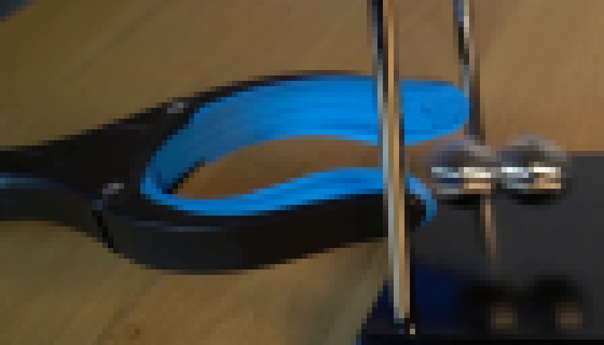
视觉工具实际返回图片 14
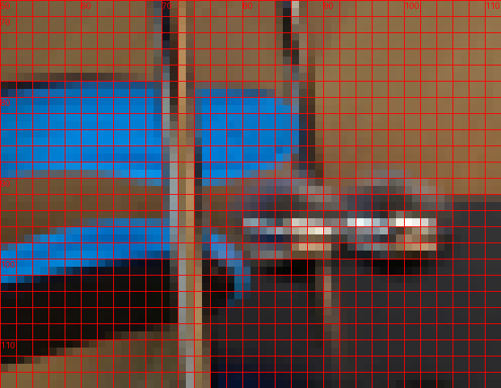
视觉工具实际返回图片 15
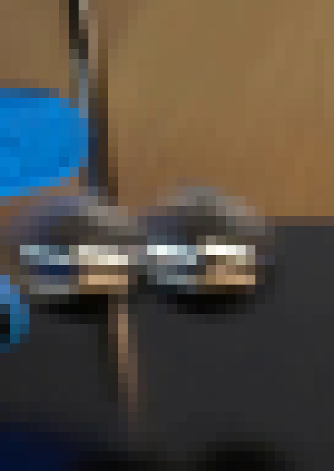
视觉工具实际返回图片 16
视觉工具实际返回图片 17
视觉工具实际返回图片 18
视觉工具实际返回图片 19
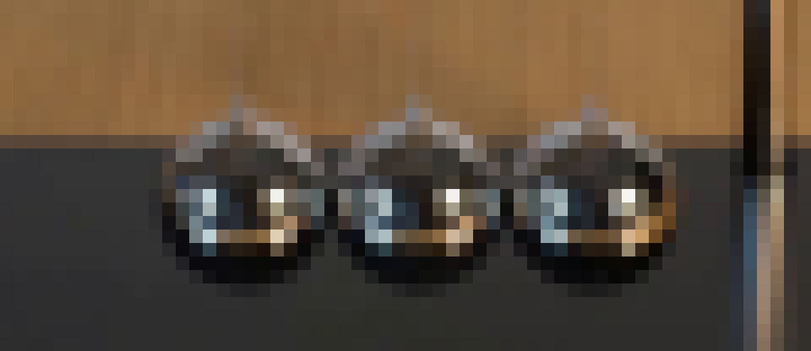
视觉工具实际返回图片 20
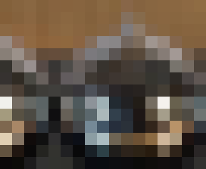
命令 35exit 0
/bin/bash -c 'ls -l generate.py 2>/dev/null || true'
命令 36exit 0
/bin/bash -c 'python generate.py'
命令 37exit 0
/bin/bash -c "python - <<'PY'
import generate, cv2, numpy as np
from PIL import Image
s=np.asarray(Image.open('first_frame.png').convert('RGB')).copy()
p=generate.make_clean_plate(cv2.cvtColor(s,cv2.COLOR_RGB2BGR))
cv2.imwrite('.tmp/clean.png',p)
cv2.imwrite('.tmp/clean_big.png',cv2.resize(p,(1024,576),interpolation=cv2.INTER_NEAREST))
PY"命令 38exit 0
/bin/bash -c "python - <<'PY'
from PIL import Image
im=Image.open('frames/04.png')
im.crop((85,84,164,107)).resize((948,276),Image.Resampling.NEAREST).save('.tmp/renderballs.png')
im2=Image.open('first_frame.png')
im2.crop((85,84,164,107)).resize((948,276),Image.Resampling.NEAREST).save('.tmp/origballs.png')
PY"命令 39exit 0
/bin/bash -c "python - <<'PY'
import numpy as np
from PIL import Image
im=np.array(Image.open('first_frame.png'))
chars=' .:-=+*#%@'
for y in range(88,106):
s=''
for x in range(116,162):
v=im[y,x].mean()
s+=chars[min(9,int(v/256*10))]
print(f'{y:3}',s)
print(' '+''.join(str(x//10%10) for x in range(116,162)))
print(' '+''.join(str(x%10) for x in range(116,162)))
PY"命令 40exit 0
/bin/bash -c "python - <<'PY'
import cv2,numpy as np
from PIL import Image
im=np.array(Image.open('first_frame.png'))
for cx in [99,112,125,138,151]:
# average grayscale ring for guessed center y96, r7; print angular brightness
vals=[]
for a in range(0,360,15):
x=round(cx+7*np.cos(np.deg2rad(a))); y=round(96+7*np.sin(np.deg2rad(a)))
vals.append(int(im[y,x].mean()))
print(cx,vals)
PY"命令 41exit 0
/bin/bash -c 'python generate.py'
命令 42exit 0
/bin/bash -c "python - <<'PY'
from PIL import Image
im=Image.open('frames/04.png')
im.crop((72,78,164,108)).resize((1104,360),Image.Resampling.NEAREST).save('.tmp/render2.png')
PY"命令 43exit 0
/bin/bash -c "python - <<'PY'
from PIL import Image
for i in range(0,20):
im=Image.open(f'frames/{i:02d}.png').crop((68,82,164,108)).resize((768,208),Image.Resampling.NEAREST)
im.save(f'.tmp/crop_{i:02d}.png')
PY"命令 44exit 0
/bin/bash -c "python - <<'PY'
from PIL import Image,ImageDraw
im=Image.open('first_frame.png').crop((68,72,94,108)).resize((520,720),Image.Resampling.NEAREST)
d=ImageDraw.Draw(im)
for x in range(68,95,2):
X=(x-68)*20; d.line((X,0,X,720),fill=(255,0,0)); d.text((X+1,1),str(x),fill=(255,0,0))
for y in range(72,109,2):
Y=(y-72)*20; d.line((0,Y,520,Y),fill=(255,0,0)); d.text((1,Y+1),str(y),fill=(255,0,0))
im.save('.tmp/jaw_grid2.png')
PY"命令 45exit 0
/bin/bash -c "python - <<'PY'
from PIL import Image
im=Image.open('first_frame.png')
# inspect likely left ball after jaw: exact
im.crop((78,84,105,108)).resize((810,720),Image.Resampling.NEAREST).save('.tmp/leftball_detail.png')
PY"命令 46exit 0
/bin/bash -c "python - <<'PY'
import cv2
im=cv2.imread('first_frame.png')
crop=im[32:92,70:165]
lab=cv2.cvtColor(crop,cv2.COLOR_BGR2LAB); l,a,b=cv2.split(lab); l=cv2.createCLAHE(clipLimit=3,tileGridSize=(8,8)).apply(l)
out=cv2.cvtColor(cv2.merge((l,a,b)),cv2.COLOR_LAB2BGR)
cv2.imwrite('.tmp/threads_enh.png',cv2.resize(out,(950,600),interpolation=cv2.INTER_NEAREST))
PY"命令 47exit 0
/bin/bash -c "python - <<'PY'
from PIL import Image
im=Image.open('.tmp/threads_enh.png')
# crops original x70:165 y32:92 scaled 10; thread pair near top
im.crop((0,0,950,300)).save('.tmp/threads_top.png')
PY"命令 48exit 0
/bin/bash -c "python - <<'PY'
import numpy as np
from PIL import Image
im=np.array(Image.open('first_frame.png')).astype(float)
g=im.mean(2)
# Print contrast-enhanced grayscale ascii of x80:164 y34:92 using 0.3..140 mapping
chars=' .:-=+*#%@'
for y in range(34,92,2):
s=''
for x in range(78,165):
v=g[y:y+2,x].mean()
# enhance: use local min? simply scale 20..130
q=np.clip((v-15)/120,0,1)
s+=chars[min(9,int(q*10))]
print(f'{y:3}',s)
PY"命令 49exit 0
/bin/bash -c "python - <<'PY'
import cv2, numpy as np
im=cv2.imread('first_frame.png')
# thread endpoints: inspect top bar y31:56 x80:165, use bright lines vs base. output upscaled grayscale high contrast
g=cv2.cvtColor(im,cv2.COLOR_BGR2GRAY)
crop=g[32:90,70:165]
crop=cv2.normalize(crop,None,0,255,cv2.NORM_MINMAX)
crop=cv2.createCLAHE(clipLimit=5,tileGridSize=(4,4)).apply(crop)
cv2.imwrite('.tmp/thread_gray.png',cv2.resize(crop,(950,580),interpolation=cv2.INTER_NEAREST))
PY"命令 50exit 0
/bin/bash -c "python - <<'PY'
import numpy as np
from PIL import Image
im=np.array(Image.open('first_frame.png'))
# inspect pixel colors of first ball region in frame0 (x78..105 y86..103)
chars=' .:-=+*#%@'
for y in range(84,104):
s=''
for x in range(76,106):
v=im[y,x].mean(); s+=chars[min(9,int(v/256*10))]
print(f'{y:3}',s)
print(' '+''.join(str(x//10%10) for x in range(76,106)))
print(' '+''.join(str(x%10) for x in range(76,106)))
PY"命令 51exit 0
/bin/bash -c "python - <<'PY'
import cv2,numpy as np
from PIL import Image
im=cv2.imread('first_frame.png')
# show first pair in HSV saturation to find metal
hsv=cv2.cvtColor(im,cv2.COLOR_BGR2HSV)
for y in range(86,104):
s=''
for x in range(76,106):
h,sa,v=hsv[y,x]
s += '@' if v>200 else '#' if v>140 else '+' if v>90 else '-' if v>50 else '.'
print(f'{y:3}',s)
PY"命令 52exit 0
/bin/bash -c "python - <<'PY'
from PIL import Image
for i in [0,1,2,3,4,7,10,13,16,19]:
im=Image.open(f'frames/{i:02d}.png').crop((70,82,164,108)).resize((752,208),Image.Resampling.NEAREST)
im.save(f'.tmp/b{i:02d}.png')
PY"命令 53exit 0
/bin/bash -c "python - <<'PY'
from PIL import Image
im=Image.open('first_frame.png')
# make target sprite crop 17x17 center138,96
im.crop((129,87,148,106)).resize((380,380),Image.Resampling.NEAREST).save('.tmp/sprite_source.png')
PY"命令 54exit 0
/bin/bash -c "python - <<'PY'
import cv2
im=cv2.imread('first_frame.png')
crop=im[84:108,70:108]
cv2.imwrite('.tmp/left_detail2.png',cv2.resize(crop,(760,480),interpolation=cv2.INTER_LANCZOS4))
PY"命令 55exit 0
/bin/bash -c "python - <<'PY'
import numpy as np
from PIL import Image
im=np.array(Image.open('first_frame.png'))
for y in range(84,101):
s=''
for x in range(68,110):
r,g,b=im[y,x]
# classify blue >= 120 and blue-r >30 as gripper
s += 'B' if (b>120 and int(b)-int(r)>35) else ('M' if max(r,g,b)>125 else ('-' if max(r,g,b)>45 else '.'))
print(f'{y:3}',s)
print(' '+''.join(str(x//10%10) for x in range(68,110)))
print(' '+''.join(str(x%10) for x in range(68,110)))
PY"命令 56exit 0
/bin/bash -c "python - <<'PY'
import numpy as np
from PIL import Image
im=np.array(Image.open('first_frame.png'))
for y in range(84,101):
s=''
for x in range(68,110):
r,g,b=[int(v) for v in im[y,x]]
if b>90 and b-r>20: s+='B'
elif max(r,g,b)>120: s+='M'
elif max(r,g,b)>55:s+='-'
else:s+='.'
print(f'{y:3}',s)
print(' '+''.join(str(x//10%10) for x in range(68,110)))
print(' '+''.join(str(x%10) for x in range(68,110)))
PY"命令 57exit 0
/bin/bash -c "python - <<'PY'
import cv2,numpy as np
im=cv2.imread('first_frame.png')
crop=im[82:110,68:110]
# sharpen / edge
sharp=cv2.detailEnhance(crop,sigma_s=10,sigma_r=.15)
cv2.imwrite('.tmp/left_detail3.png',cv2.resize(sharp,(840,560),interpolation=cv2.INTER_NEAREST))
PY"命令 58exit 0
/bin/bash -c "python - <<'PY'
import numpy as np
from PIL import Image
im=np.array(Image.open('first_frame.png'))
# print RGB values across top strings y40 etc for x 90..165
for y in [36,40,44,48,52,56,60,64,68,72,76,80,84]:
arr=im[y,86:166].astype(int)
# find low brightness pixels
idx=np.argsort(arr.mean(1))[:10]+86
print(y,[(int(x),im[y,x].tolist()) for x in sorted(idx)])
PY"命令 59exit 0
/bin/bash -c "python - <<'PY'
import numpy as np
from PIL import Image
im=np.array(Image.open('first_frame.png'))
for x in [99,112,125,138,151]:
print('x',x)
for y in range(35,90,5): print(y,im[y,x].tolist(),end=';')
print()
PY"命令 60exit 0
/bin/bash -c "python - <<'PY'
import numpy as np
from PIL import Image
im=np.array(Image.open('first_frame.png'))
# string candidates near expected vertical lines compare luminance around y40-84, use local dark contrast
for x in [99,112,125,138,151]:
vals=[]
for y in range(38,85):
v=im[y,x].mean(); n=(im[y,x-2].mean()+im[y,x+2].mean())/2
vals.append(v-n)
print(x,round(np.mean(vals),1),round(np.max(vals),1),round(np.min(vals),1))
PY"命令 61exit 0
/bin/bash -c "python - <<'PY'
from PIL import Image
import numpy as np
im=np.array(Image.open('first_frame.png')).astype(float)
# local highpass absolute value in thread region; save heatmap
import cv2
g=cv2.cvtColor(im.astype('uint8'),cv2.COLOR_RGB2GRAY).astype(float)
b=cv2.GaussianBlur(g,(0,0),2)
h=np.abs(g-b)
crop=h[36:86,75:165]
crop=np.clip(crop*8,0,255).astype('uint8')
crop=cv2.applyColorMap(crop,cv2.COLORMAP_TURBO)
cv2.imwrite('.tmp/highpass_threads.png',cv2.resize(crop,(900,500),interpolation=cv2.INTER_NEAREST))
PY"命令 62exit 0
/bin/bash -c 'python generate.py'
命令 63exit 0
/bin/bash -c "python - <<'PY'
from PIL import Image
im=Image.open('frames/04.png')
im.crop((68,82,164,108)).resize((1152,312),Image.Resampling.NEAREST).save('.tmp/render3.png')
PY"命令 64exit 0
/bin/bash -c "python - <<'PY' import generate for i in range(20): print(i,generate.angles_at(i)*180/3.14159265) PY"
命令 65exit 0
/bin/bash -c "python - <<'PY' import generate, numpy as np from PIL import Image for i in range(20): c=generate.ball_centres(i) print(i,np.round(c[:,0],1).tolist()) PY"
命令 66exit 0
/bin/bash -c "python - <<'PY'
import hashlib
from pathlib import Path
from PIL import Image
import numpy as np
p=Path('.')
first=np.array(Image.open('first_frame.png').convert('RGB'))
f0=np.array(Image.open('frames/00.png').convert('RGB'))
print('frame0_equal',np.array_equal(first,f0))
print('frame0_sha',hashlib.sha256(first.tobytes()).hexdigest())
print('frames',len(list((p/'frames').glob('*.png'))))
print('pixels_npz', (p/'pixels.npz').exists(), 'index', (p/'index.html').exists())
z=np.load('pixels.npz')['pixels']
print('packed_shape_dtype',z.shape,z.dtype)
PY"命令 67exit 0
/bin/bash -c "python - <<'PY'
from PIL import Image
for i in [1,4,7,10,13,16,19]:
im=Image.open(f'frames/{i:02d}.png').crop((68,82,166,109)).resize((1176,324),Image.Resampling.NEAREST)
im.save(f'.tmp/final_crop_{i:02d}.png')
PY"命令 68exit 0
/bin/bash -c 'git status --short 2>/dev/null || true && ls -lh generate.py pixels.npz index.html inspection.png transition_check.png'
命令 69exit 0
/bin/bash -c "python - <<'PY'
import numpy as np
from PIL import Image
for i in range(20):
im=np.array(Image.open(f'frames/{i:02d}.png'))
prev=np.array(Image.open(f'frames/{max(0,i-1):02d}.png'))
diff=np.abs(im.astype(int)-prev.astype(int)).sum(2)
print(i,'changed',int((diff>0).sum()),'strong',int((diff>15).sum()))
PY"命令 70exit 0
/bin/bash -c "python - <<'PY'
import numpy as np
from PIL import Image
orig=np.array(Image.open('first_frame.png')).astype(int)
f1=np.array(Image.open('frames/01.png')).astype(int)
d=np.abs(orig-f1).sum(2)
ys,xs=np.where(d>10)
print(xs.min(),xs.max(),ys.min(),ys.max())
# count outside region
out=((xs<60)|(xs>170)|(ys<75)|(ys>112)).sum()
print('outside',out)
PY"命令 71exit 0
/bin/bash -c "python generate.py && python - <<'PY' import generate for i in range(20): print(i,generate.ball_centres(i)[[0,3],0].round(1).tolist()) PY"
命令 72exit 0
/bin/bash -c "python - <<'PY' import generate for i in range(20): t=generate.angles_at(i) print(i,round(t[0]*57.2958,2),round(t[3]*57.2958,2)) PY"
命令 73exit 0
/bin/bash -c "python - <<'PY'
import numpy as np
from PIL import Image
orig=np.array(Image.open('first_frame.png')).astype(int)
for i in range(20):
im=np.array(Image.open(f'frames/{i:02d}.png')).astype(int)
d=np.abs(im-orig).sum(2)
ys,xs=np.where(d>10)
print(i,(xs.min(),xs.max(),ys.min(),ys.max()) if len(xs) else None)
PY"命令 74exit 0
/bin/bash -c "python -m py_compile generate.py && python - <<'PY'
from pathlib import Path
import numpy as np
from PIL import Image
first=np.asarray(Image.open('first_frame.png').convert('RGB'))
frames=np.stack([np.asarray(Image.open(f'frames/{i:02d}.png').convert('RGB')) for i in range(20)])
assert frames.shape==(20,144,256,3) and frames.dtype==np.uint8
assert np.array_equal(frames[0],first)
packed=np.load('pixels.npz')['pixels']
assert packed.shape==(144,256,20) and packed.dtype==np.uint32
print('OK frames=',frames.shape,'fps=4 duration=5s')
print('frame0 pixel-identical:',np.array_equal(frames[0],first))
print('artifact bytes:',Path('pixels.npz').stat().st_size,'player bytes:',Path('index.html').stat().st_size)
PY"命令 75exit 0
/bin/bash -c "python - <<'PY'
from pathlib import Path
from PIL import Image
import numpy as np, cv2
frames=[np.asarray(Image.open(f'frames/{i:02d}.png')) for i in range(20)]
# Check all balls remain within cradle bounds and no source plate drift outside moving area.
f0=frames[0]
for i,im in enumerate(frames[1:],1):
d=np.abs(im.astype(np.int16)-f0.astype(np.int16)).max(2)
ys,xs=np.where(d>0)
assert xs.min()>=35 and xs.max()<=220 and ys.min()>=25 and ys.max()<=110, (i,xs.min(),xs.max(),ys.min(),ys.max())
# Save a compact preview MP4 for convenient review.
writer=cv2.VideoWriter(str(Path('.tmp/preview.mp4')),cv2.VideoWriter_fourcc(*'mp4v'),4,(256,144))
for im in frames:
writer.write(cv2.cvtColor(im,cv2.COLOR_RGB2BGR))
writer.release()
print('OK preview',Path('.tmp/preview.mp4').stat().st_size)
PY"命令 76exit 0
/bin/bash -c 'ls -lh .tmp/preview.mp4 && find frames -maxdepth 1 -type f | wc -l'
命令 77exit 0
/bin/bash -c "python - <<'PY' from pathlib import Path for p in ['generate.py','pixels.npz','index.html','inspection.png','transition_check.png','.tmp/preview.mp4']: q=Path(p); print(p,q.exists(),q.stat().st_size if q.exists() else None) PY"
视觉工具实际返回图片 21

视觉工具实际返回图片 22
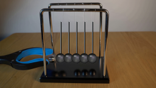
视觉工具实际返回图片 23
视觉工具实际返回图片 24
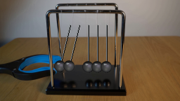
视觉工具实际返回图片 25
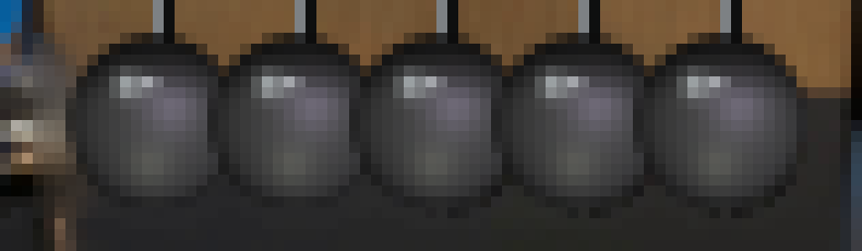
视觉工具实际返回图片 26
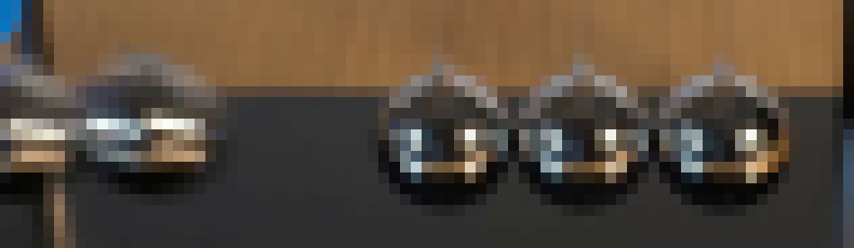
视觉工具实际返回图片 27
视觉工具实际返回图片 28
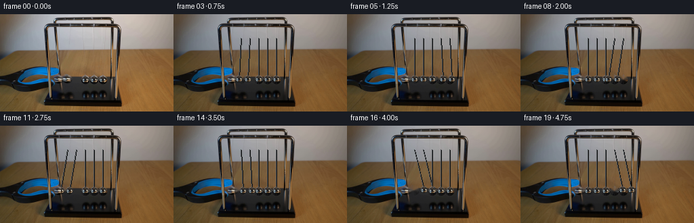
视觉工具实际返回图片 29
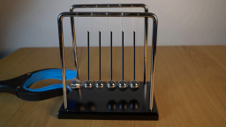
视觉工具实际返回图片 30
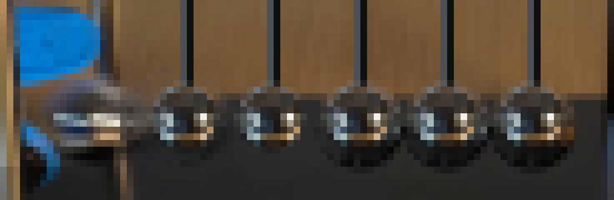
视觉工具实际返回图片 31
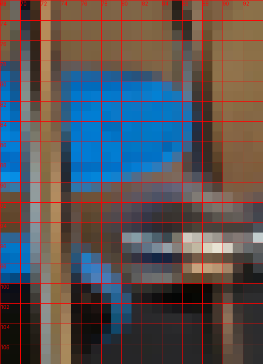
视觉工具实际返回图片 32
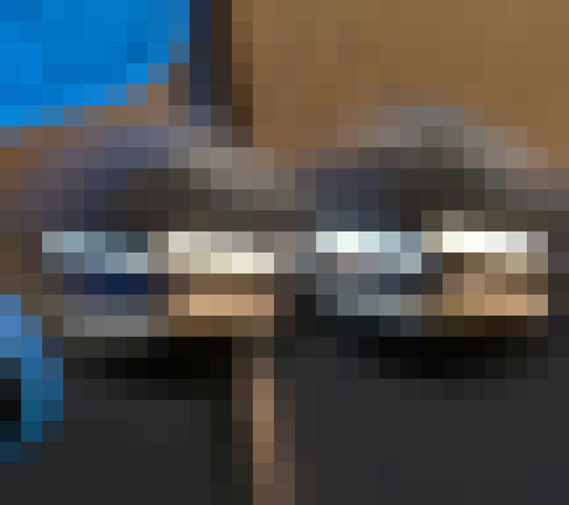
视觉工具实际返回图片 33
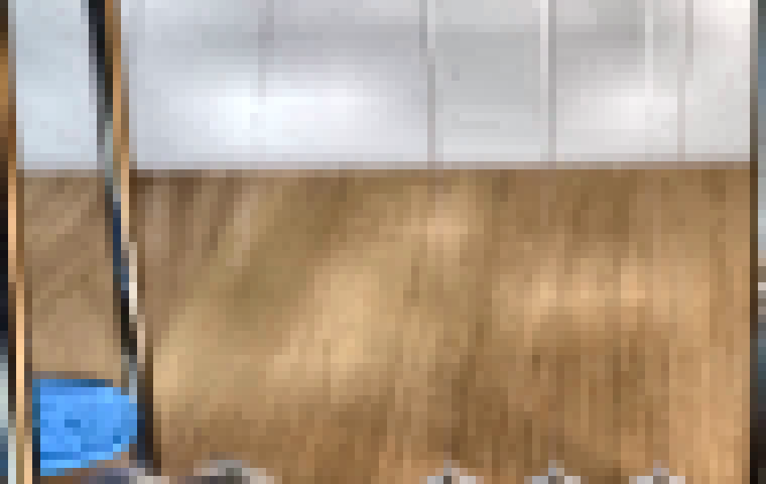
视觉工具实际返回图片 34
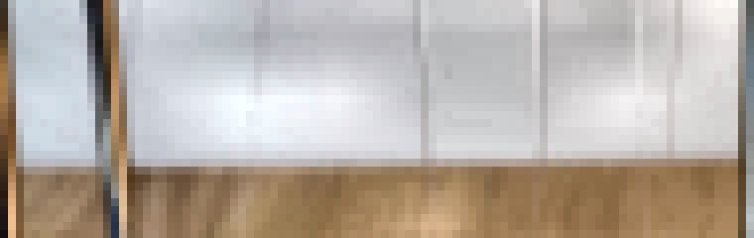
视觉工具实际返回图片 35
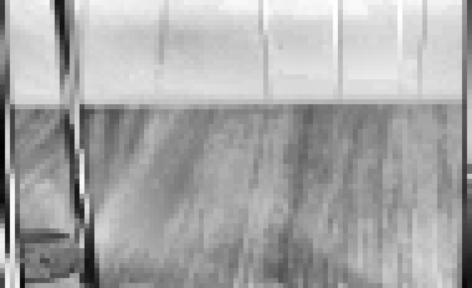
视觉工具实际返回图片 36
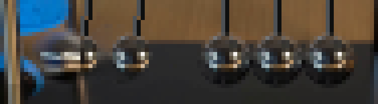
视觉工具实际返回图片 37
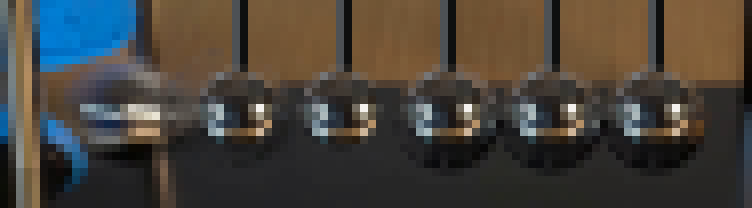
视觉工具实际返回图片 38
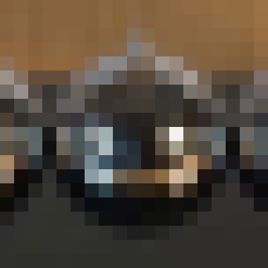
视觉工具实际返回图片 39
视觉工具实际返回图片 40
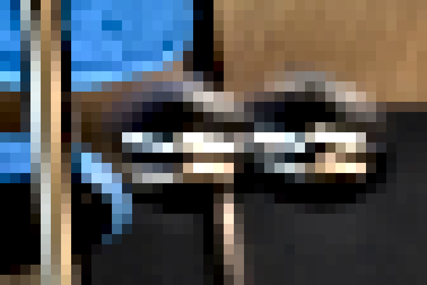
视觉工具实际返回图片 41
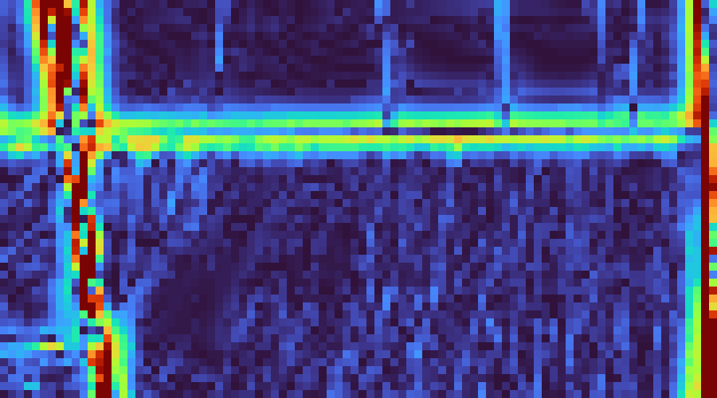
视觉工具实际返回图片 42
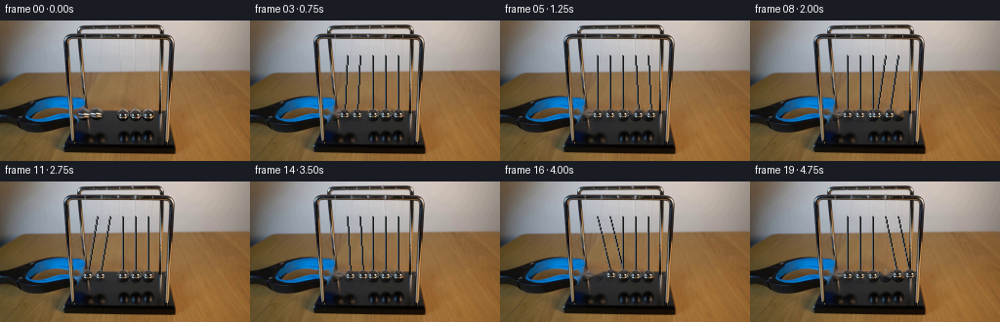
视觉工具实际返回图片 43
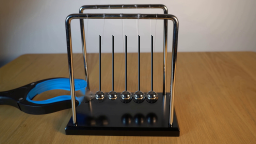
视觉工具实际返回图片 44
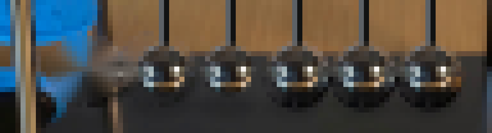
视觉工具实际返回图片 45

视觉工具实际返回图片 46
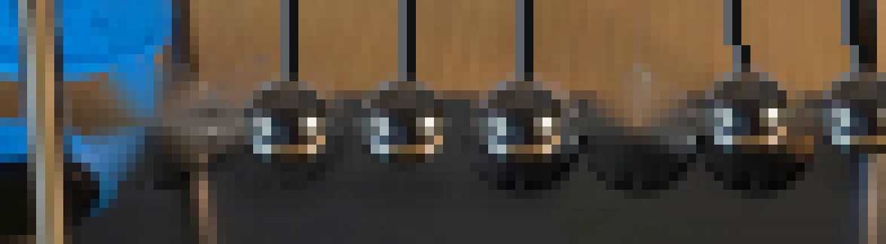
视觉工具实际返回图片 47
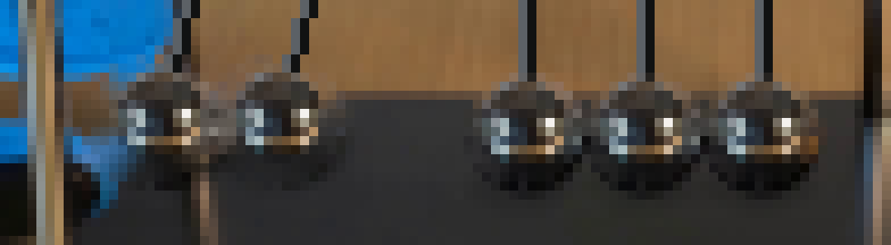
视觉工具实际返回图片 48
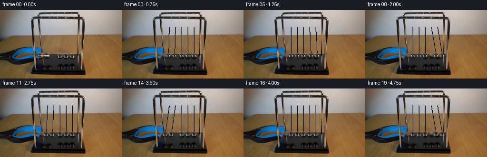
保存候选 4 份；完成命令 77 次；可验证图片返回 48 张。原始 API 响应与完整日志保留在本地。